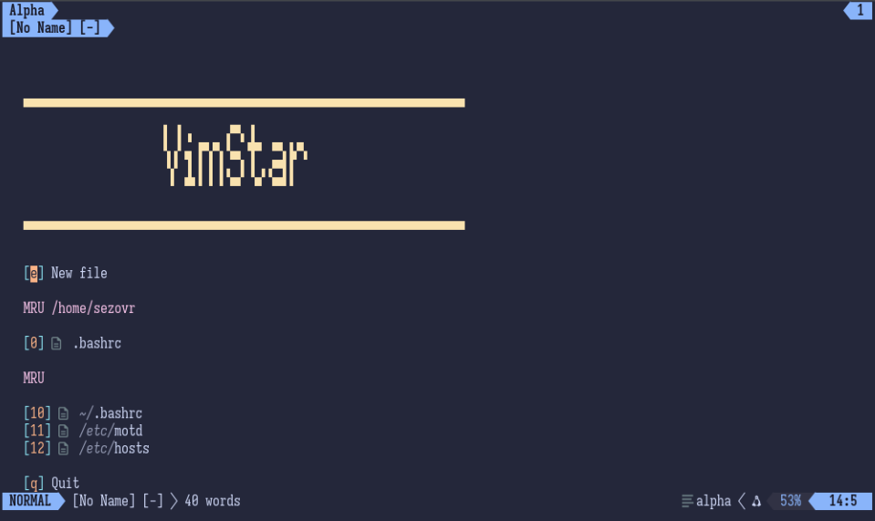
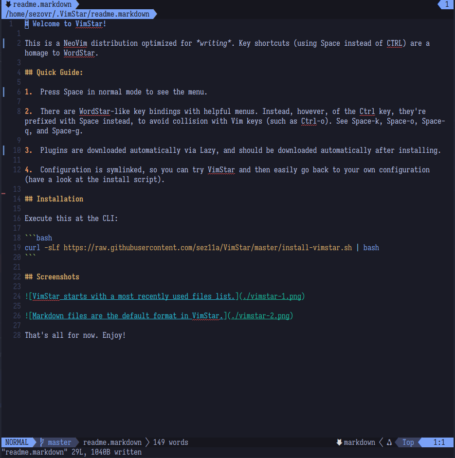

A Neovim distribution optimized for writing, inspired by WordStar
VimStar turns Neovim into a word processor while retaining Neovim's powerful completion, debugging, and navigation for all your coding needs. With a menu system inspired by WordStar, it's ideal for technical writing, creative writing, coding, and even publishing.
Why VimStar?
📝 Writing First
Markdown, LaTeX, Typst, word count, and one-click Pandoc publishing.
⚡ WordStar Menus
Inspired by WordStar: Space-K (Block & Save), Space-O (Onscreen Format), Space-P (Print Controls), Space-Q (Quick Menu) organize word processing functions.
🤖 AI Assistant
Integrates CodeCompanion with Ollama for inline suggestions and chat.
💻 Language Support
LSPs and debugging for Python, Lua, TypeScript, Java, C, Go, and more.
📚 Wiki System
Complete time management system implemented with wiki.vim and Markdown.
🛠️ Batteries Included
Lazy.nvim, Mason, Tree-sitter: everything auto-installed.
Screenshots
Dashboard
Start right away with a new or recent file.

Markdown Editing
Defaults to Markdown, with full Git support.

Install
The installation script clones or updates VimStar to the active user’s home directory and links that to Neovim’s config directory:
- Linux:
~/.config/nvim - macOS:
~/Library/Application Support/nvim - Windows:
$env:LOCALAPPDATA\nvim
If you have a Neovim configuration already, rename the config directory or back it up and remove it before installing.
Requirements
- Neovim 0.9+
- Git (must be available in PATH)
- Pandoc for publishing/conversions
- Ollama for AI chat/completion features
- Yarn to compile Markdown preview
Linux/macOS
curl -sLf https://raw.githubusercontent.com/sez11a/VimStar/master/install-vimstar.sh | bash
Windows
Open PowerShell and run
Set-ExecutionPolicy Bypass -Scope Process -Force
irm https://raw.githubusercontent.com/sez11a/VimStar/master/install-vimstar.ps1 | iex
Note: The Windows script was generated by AI and has not been tested. Report any issues in the GitHub repository.
Manual Installation
You should read the scripts above before running them. If you don’t want to or you want to install manually, here’s how:
Clone the Repository
git clone https://github.com/sez11a/VimStar ~/.VimStar
Create symlink (Linux)
ln -sfn ~/.VimStar ~/.config/nvim
Create symlink (macOS)
ln -sfn ~/.VimStar ~/Library/Application\ Support/nvim
Create symlink (Windows PowerShell)
New-Item -ItemType SymbolicLink -Path $env:LOCALAPPDATA\nvim -Target ~/.VimStar -Force
First Launch
- Run
nvim. - Wait for Lazy.nvim to install plugins.
- Quit and restart
nvim. It is now VimStar!
Troubleshooting
- Plugins not installing: Run
Space-qlto open Lazy.nvim and check for errors - Treesitter highlighting broken: Run
Space-qtto update parsers - Spell check not working: Ensure
~/.VimStar/spell/directory exists
License
MIT License - see LICENSE for details.